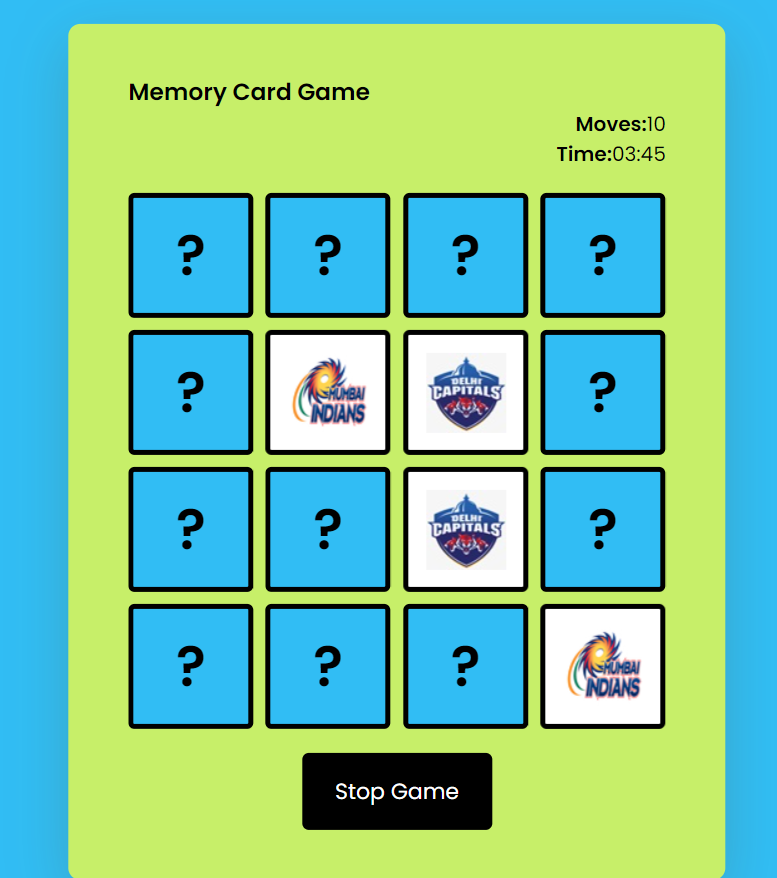

Memory Card Game
A simple and fun web-based memory card game where the objective is to match all pairs of cards with the fewest moves and in the shortest time possible.
How to Play
- Start the Game:
- All cards are initially faced down.
- Players must click on two cards per turn to reveal the images.
- Making a Move:
- Click on two cards to flip them over and reveal their images.
- If the images match, the cards stay face up.
- If the images do not match, the cards will be flipped back face down after a short delay.
- Matching Cards: Continue flipping two cards at a time and try to remember the positions of the previously revealed cards to find matching pairs.
- Moves Count: Each time you flip two cards, whether they match or not, it counts as one move. The total number of moves is displayed on the screen.
- Timer: The game tracks the total time taken to complete the game. Try to finish the game as quickly as possible.
- Winning the Game: The game ends when all pairs are successfully matched. You win when all the cards are face up.
- Stopping the Game: You can stop the game at any time by clicking the "Stop Game" button.
Features
- Interactive UI to flip and reveal cards.
- Tracks number of moves and total time.
- Visual feedback when cards are matched.
- A "Stop Game" button to end the game at any point.
Screenshot

Technologies Used
Installation
Follow the steps below to install and run the game:
git clone https://github.com/your-username/memory-card-game.git
cd memory-card-game
open index.html